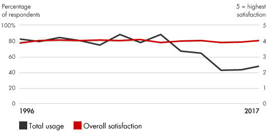
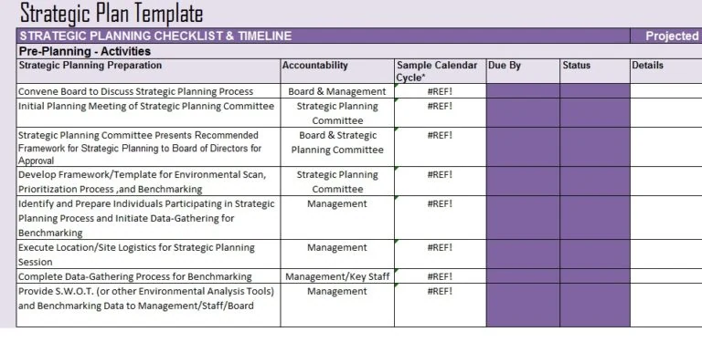

📘معرفی ابزار
برنامهریزی راهبردی یک فرایند جامع برای تعیین اهداف کسب و کار و چگونگی دستیابی به آنها میباشد. این برنامه ظرفیتهای کامل یک کسبوکار را نشان میدهد و صراحتا اهداف را به اقدامات و منابع مورد نیاز برای دستیابی به آنها پیوند می دهد. برنامه ریزی راهبردی یک فرایند منظم برای پرسیدن و پاسخ دادن به مهمترین سؤالات پیش روی تیم مدیریت، به خصوص تصمیمات تعهدآور قطعی و غیرقابل فسخ ارایه میدهد.
🆕بهروزرسانی ۱۴۰۵
این بخش در نسخهٔ آنلاین ۱۴۰۵ افزوده شده است. متن اصلی کتاب (آبان ۱۳۹۹) در بخشهای بعد بدون تغییر آمده است.
آمار و شواهد تازه
- در سنجشهای Bain، برنامهریزی راهبردی همواره در صدر ابزارهای پراستفاده بوده است (در دورهٔ ۲۰۱۷ با کاربرد ۴۸٪). Bain نسخهٔ ۲۰۲۳ را با پیمایش ۱٬۰۶۸ مدیر در پاییز ۲۰۲۲ منتشر کرده است. (منبع: Bain)
- گزارش فناوری Bain (۲۰۲۵): هوش مصنوعی مهمترین عامل برهمزننده دههٔ جاری است و باید بخشی از فرضهای راهبردی باشد. (منبع: Bain)
چه چیزی تغییر کرده؟
چرخهٔ برنامهریزی سالانهٔ ثابت در محیطی با تغییر سریع کافی نیست. روش پیشنهادی: افق بلندمدت (۳ تا ۵ ساله) را نگه دارید، اما بازبینی سهماهه و سناریوهای هوش مصنوعی/اقتصاد/تحریم را اضافه کنید.
نمونه ابزارها و نرمافزارهای امروزی
نامها صرفاً نمونهاند و توصیه یا تبلیغ تجاری نیستند؛ شرایط دسترسی و تحریمها را برای سازمان خود بررسی کنید.
منابع این بخش
🧩فرآیند اجرا
- رسالت ، چشم انداز و ارزشهای اساسی سازمان را شرح دهید
- عرصههای تجاری بالقوه را هدف قرار دهید و در مورد بازارها در مورد تهدیدها و فرصتهای نوظهور کاوش کنید
- اولویتهای فعلی و آینده انواع مشتریان هدف۱ را درک کنید
- نقاط قوت و ضعف شرکت را نسبت به رقبا تجزیه و تحلیل کنید و تعیین کنید که کدام عناصر زنجیره ارزش را باید شرکت بسازد و کدام عناصر را باید خریداری کند
- استراتژیهای جایگزین را شناسایی و ارزیابی کنید
- یک مدل تجاری سودمند ایجاد کنید که سودآوری شرکت را از رقبای خود متمایز کند
- انتظارات ذینفعان را تعیین کرده و اهداف شفاف و قانع کننده ای را برای کسبوکار تعیین کنید
- برنامهها و سیاست هایی را برای اجرای استراتژی آماده کنید
- ساختارهای سازمانی مورد نیاز، فرآیندهای تصمیم گیری، سیستمهای اطلاعاتی و کنترلی و سیستمهای استخدام و آموزش را ایجاد کنید.
- تخصیص منابع برای توسعه قابلیتهای مهم را انجام دهید.
- برای پاسخ به شرایط احتمالی یا تغییرات محیطی برنامه ریزی کنید.
- بر عملکرد نظارت داشته باشید
💼موارد استفاده در کسبوکار
- تغییر جهت و عملکرد کسب و کار
- تشویق به بحثهای مبتنی بر واقعیت در مورد موضوعات حساس
- ایجاد یک چارچوب مشترک برای تصمیم گیری در سازمان
- تنظیم زمینه مناسب برای تصمیمات بودجه و ارزیابی عملکرد
- آموزش به مدیران جهت تصمیم گیری بهتر
📈میزان محبوبیت در طی زمان

🧪نمونه ابزار / الگو

در این تصویر یک نمونه الگوی برنامهریزی راهبردی در نرم افزار ماکروسافت اکسل نشان داده شده است. در خصوص هر راهبرد سعی میشود واحدهای مسئول، زمان بندی و وضعیت مشخص شود تا تصویر شفافی را به همه ذینفعان ارایه دهد.
⬇️چکلیست قابلدانلود
چکلیست اجرایی این ابزار را دانلود و در سازمان خود تکمیل کنید. گامها از فرآیند اجرای همین صفحه برداشته شدهاند و ستونهای مسئول، موعد و وضعیت برای پیگیری تیمی خالی گذاشته شده است.
⬇ دانلود چکلیست (Word) · برنامهریزی راهبردی📚مراجع مطالعه بیشتر
- Bain & Company, Strategic Planning: https://www.bain.com/insights/management-tools-strategic-planning
- Projectemplates, http://www.projectemplates.com/free-strategic-plan-template/
- Collis, Daniel J., and Michael G. Rukstad. “Can You Say What Your Strategy Is?” Harvard Business Review, April 2008, pp. 82–90.
- Drucker, Peter F. Managing in a Time of Great Change. Harvard Business Press, 2009.
- Gottfredson, Mark, and Steve Schaubert. The Breakthrough Imperative: How the Best Managers Get Outstanding Results. HarperBusiness, 2008.
- Hamel, Gary, and C. K. Prahalad. Competing for the Future. Harvard Business School Press, 1994.
- Mankins, Michael C. “Stop Wasting Valuable Time.” Harvard Business Review, September 2004, pp. 58–65.
معادلهای انگلیسی
- ۱targeted customer segments